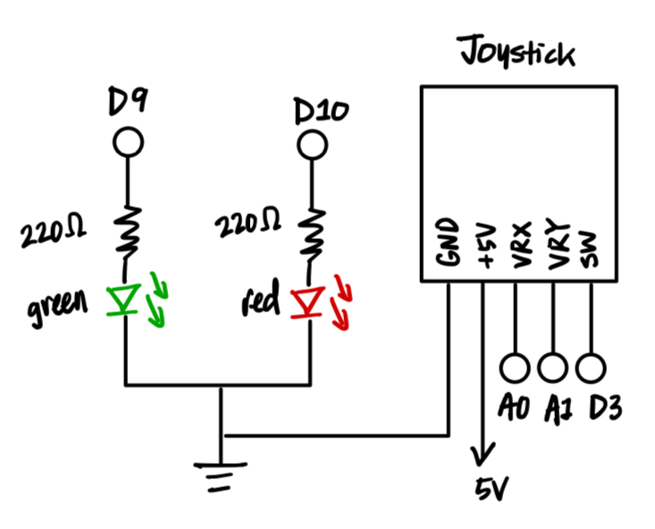
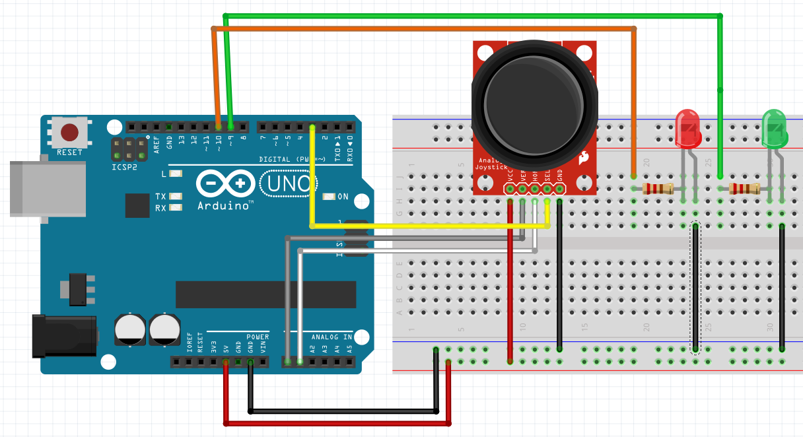

Schematic

This schematic shows the Arduino connected to the joystick and the LEDs.
The joystick GND is connected to ground.
The joystick VCC is connected to 5V.
The joystick VRX (x-axis) is connected to analog pin A0, and the VRY (y-axis) is connected to analog pin A1.
The joystick SW (switch) is connected to digital pin 3.
LEDs are wired in parallel, and each LED is connected to a 220 ohm resistor.
The green LED is connected to digital pin 9, and the red LED is connected to digital pin 10.
All grounds are shared.
Resistor Calculation and Choices - LEDs
With a 5 V supply and a desired current of 20 mA,
and given that red and green LEDs both have a voltage drop of 1.8 V:
- Red LED: R = (5 V - 1.8 V) / 20 mA = 160 Ω
- Green LED: R = (5 V - 1.8 V) / 20 mA = 160 Ω
So I chose a 220 Ω resistor for the red and green LEDs.
Circuit

This circuit shows the Arduino connected to the joystick and the LEDs.
The joystick GND is connected to ground.
The joystick VCC is connected to 5V.
The joystick's x-axis is connected to analog pin A0, and the y-axis is connected to analog pin A1.
The joystick button is connected to digital pin 3.
The green LED is connected to digital pin 9, and the red LED is connected to digital pin 10.
All grounds are shared.

This is a simple game where the player uses a joystick to move a paddle in horizontal direction to hit a ball.
The player can press the joystick button to start the game when they feel ready.
When the game starts, the ball falls down from a random X position on the top of the screen, and the player can move the paddle to hit the ball.
When they hit the ball with the paddle, the player scores a point and the green LED blinks.
If they miss the ball or the ball falls off the bottom of the screen, the player loses a point and the red LED blinks.
Firmware
Arduino Sketch for A6 Talking to the Web
*Some code inspiration (compute x and y-axis distances from center) are adapted from 4Button2AxisJoystick.ino
#define ANALOG_X_PIN A0 // joystick x axis connected to analog pin A0
#define ANALOG_Y_PIN A1 // ioystick y axis connected to analog pin A1
#define JOY_BUTTON_PIN 3 // yoystick button on digital pin 3
#define GREEN_PIN 9 // green LED connected to digital pin 9
#define RED_PIN 10 // red LED connected to digital pin 10
const int MAX_ANALOG_VAL = 1023; // max analog read value
const int JOYSTICK_CENTER_VALUE = int(MAX_ANALOG_VAL / 2); // joystick center
const int JOYSTICK_MOVEMENT_THRESHOLD = 12; // deadzone so it doesn't jitter
int joyX; // joystick raw x-axis value
int joyY; // joystick raw y-axis value
void setup() {
Serial.begin(9600); // serial communication to p5.js
pinMode(GREEN_PIN, OUTPUT); // green led pin as output
pinMode(RED_PIN, OUTPUT); // red led pin as output
pinMode(JOY_BUTTON_PIN, INPUT_PULLUP); // button is HIGH normally, LOW when pressed
}
void loop() {
// read joystick x and y axes (0-1023)
joyX = analogRead(ANALOG_X_PIN);
joyY = analogRead(ANALOG_Y_PIN);
// compute how far from center they are
int xDistFromCenter = joyX - JOYSTICK_CENTER_VALUE;
int yDistFromCenter = joyY - JOYSTICK_CENTER_VALUE;
// ignore small noise near center
if (abs(xDistFromCenter) < JOYSTICK_MOVEMENT_THRESHOLD) {
xDistFromCenter = 0;
}
if (abs(yDistFromCenter) < JOYSTICK_MOVEMENT_THRESHOLD) {
yDistFromCenter = 0;
}
// read joystick button state (1 = not pressed, 0 = pressed)
int buttonVal = digitalRead(JOY_BUTTON_PIN);
// send data to p5.js in format (xDistFromCenter, yDistFromCenter, buttonVal)
Serial.print(xDistFromCenter);
Serial.print(",");
Serial.print(yDistFromCenter);
Serial.print(",");
Serial.println(buttonVal);
// receive data from p5.js, if p5.js sent something:
if (Serial.available() > 0) {
char cmd = Serial.read(); // read one character
if (cmd == 'G') { // G -> green
blinkGreen(); // blink green LED
} else if (cmd == 'R') { // R -> Red
blinkRed(); // blink red LED
}
}
delay(20); // delay to wait for serial communication
}
// blink green LED -> hit the ball in the game
void blinkGreen() {
digitalWrite(GREEN_PIN, HIGH); // turn green LED on
digitalWrite(RED_PIN, LOW); // making sure red LED is off
delay(200); // keep it on for 200ms
digitalWrite(GREEN_PIN, LOW); // turn green LED off
}
// blink red LED -> missed the ball in the game
void blinkRed() {
digitalWrite(RED_PIN, HIGH); // turn red LED on
digitalWrite(GREEN_PIN, LOW); // making sure green LED is off
delay(200); // keep it on for 200ms
digitalWrite(RED_PIN, LOW); // turn red LED off
}
js file for A6 Talking to the Web
// Global variables!
const BAUD_RATE = 9600; // this should match the baud rate in your Arduino sketch
const MAX_DIST = 512; // max distance from center of joystick
const paddleY = 300; // fixed y-position of the paddle (in translated coordinates)
const paddleWidth = 120; // width of paddle
const paddleHeight = 20; // height of paddle
// paddle varibles
let paddleX = 0; // paddle starts at center (in translated coordinates)
let joyX = 0; // joystick raw x-axis value from arduino
let joyY = 0; // joystick raw y-axis value from arduino
let smoothedX = 0; // smoothed x-axis value
// Game state variables
let score = 0; // player score
let gameStarted = false; // game state
let joyBtn = 1; // joystick button state: 1 = not pressed, 0 = pressed
// ball variables
let ballX; // ball x-position
let ballY; // ball y-position
let ballSize = 30; // diameter of the ball
function setup() {
setupSerial(); // Run our serial setup function (below)
// Create a canvas that is the size of our browser window.
// windowWidth and windowHeight are p5 variables
createCanvas(windowWidth, windowHeight);
// p5 text settings. BOLD and CENTER are constants provided by p5.
// See the "Typography" section in the p5 reference: https://p5js.org/reference/
textFont("system-ui", 50);
textStyle(BOLD);
textAlign(CENTER, CENTER);
}
function draw() {
background(0); // draw a black background
translate(windowWidth / 2, windowHeight / 2); // translate to center of screen
receiveData(); // receive data from arduino
drawInstruction(); // draw instruction text
// draw paddle (centered rectangle)
fill(255); // white color
rectMode(CENTER); // center the rectangle
rect(paddleX, paddleY, paddleWidth, paddleHeight); // draw the paddle in rectangle form
// check if game hasn't started yet and joystick button is pressed:
if (!gameStarted && joyBtn === 0) {
startGame(); // start the game
}
// If game hasn't started yet, don't update paddle or ball
if (!gameStarted) {
return;
}
updatePaddle(); // update paddle position
updateBall(); // update ball position
// Draw ball
fill(255, 255, 0); // yellow color
circle(ballX, ballY, ballSize); // draw the ball as a circle
}
// send LED command to arduino
function sendLedCommand(cmd) {
const portIsOpen = checkPort(); // check if the port is open
if (!portIsOpen) return; // if the port is not open, exit the function
// send a single character plus newline
port.write(cmd + "\n"); // send the command to the arduino
}
// start the game
function startGame() {
score = 0; // reset score
gameStarted = true; // turn on game state
resetBall(); // put ball at top, random X
smoothedX = 0; // reset paddle smoothing so it doesn't jump
}
// draw instruction text
function drawInstruction() {
fill(255); // white color
textAlign(LEFT, TOP); // left align the text and top align the text
textSize(20); // 20px font size
text(`Score: ${score}`, 550, -350); // display the score
// if game hasn't started yet, display instruction text
if (!gameStarted) {
textAlign(CENTER, CENTER); // center align the text
textSize(28); // 28px font size
text("Press Joy Button to begin", 0, 0); // display instruction text
}
}
// reset ball position
function resetBall() {
const frame = windowWidth / 2 - ballSize; // frame is the width of the screen minus the ball size (in translated coordinates)
ballX = random(-frame, frame); // random x-position within the frame
ballY = -windowHeight / 2 - ballSize; // just above top edge (in translated coordinates)
}
// update ball position
function updateBall() {
// fall down
ballY += 7; // move ball down by 7 pixels
const paddleTop = paddleY - paddleHeight / 2; // top of paddle
const paddleBottom = paddleY + paddleHeight / 2; // bottom of paddle
const paddleLeft = paddleX - paddleWidth / 2; // left of paddle
const paddleRight = paddleX + paddleWidth / 2; // right of paddle
const ballTop = ballY - ballSize / 2; // top of ball
const ballBottom = ballY + ballSize / 2; // bottom of ball
const ballLeft = ballX - ballSize / 2; // left of ball
const ballRight = ballX + ballSize / 2; // right of ball
const collide = // check if ball collides with paddle
ballBottom === paddleTop && // ball bottom is at the top of the paddle
ballLeft <= paddleRight && // ball left is to the right of the paddle right
ballRight >= paddleLeft; // ball right is to the left of the paddle left
if (collide) { // if ball collides with paddle
// On hit, reset ball to top
score++; // increment score by 1
sendLedCommand('G'); // send green LED command to arduino
resetBall(); // reset ball position
}
// If ball falls off the bottom of screen, reset
if (ballTop > windowWidth / 2) {
score--; // decrement score by 1
sendLedCommand('R'); // send red LED command to arduino
resetBall(); // reset ball position
}
}
// update paddle position
function updatePaddle() {
if (isNaN(joyX)) return; // if joyX is not a number, exit the function
let normX = joyX / MAX_DIST; // normalize the x-axis value
normX = constrain(normX, -1, 1); // constrain the normalized value to -1 to 1
smoothedX = lerp(smoothedX, normX, 0.2); // smooth the x-axis value
if (isNaN(smoothedX)) smoothedX = 0; // if smoothedX is not a number, set it to 0
paddleX += smoothedX * 20; // update paddle position by multiplying the smoothed x-axis value by 20 (faster response time)
// screen boundaries in centered coordinates
const frame = windowWidth / 2 - paddleWidth / 2; // frame is the width of the screen minus the paddle width (in translated coordinates)
paddleX = constrain(paddleX, -frame, frame); // constrain the paddle position to the frame
}
function receiveData() {
/**
* Receive data over serial from your Arduino
* We're terminating data with a newline character here
* i.e., we need to Serial.println() in our Arduino code
*/
const portIsOpen = checkPort(); // Check whether the port is open (see checkPort function below)
if (!portIsOpen) return; // If the port is not open, exit the draw loop
let vals = port.readUntil("\n"); // Read from the port until the newline
let dataArray = vals.trim().split(","); // split the values into an array
joyX = int(dataArray[0]); // convert the first value to an integer as joystick x-axis value
joyY = int(dataArray[1]); // convert the second value to an integer as joystick y-axis value
joyBtn = int(dataArray[2]); // convert the third value to an integer as joystick button state
if (isNaN(joyX) || isNaN(joyY) || isNaN(joyBtn)) { // if any of the values are not a number, set them to 0
joyX = 0; // set joyX to 0 as joystick x-axis value
joyY = 0; // set joyY to 0 as joystick y-axis value
joyBtn = 1; // set joyBtn to 1 as joystick button state
}
}
// Three helper functions for managing the serial connection.
function setupSerial() {
port = createSerial();
// Check to see if there are any ports we have used previously
let usedPorts = usedSerialPorts();
if (usedPorts.length > 0) {
// If there are ports we've used, open the first one
port.open(usedPorts[0], BAUD_RATE);
}
// create a connect button
connectBtn = createButton("Connect to Arduino");
connectBtn.position(5, 5); // Position the button in the top left of the screen.
connectBtn.mouseClicked(onConnectButtonClicked); // When the button is clicked, run the onConnectButtonClicked function
}
function checkPort() {
if (!port.opened()) {
// If the port is not open, change button text
connectBtn.html("Connect to Arduino");
// Set background to gray
background("gray");
return false;
} else {
// Otherwise we are connected
connectBtn.html("Disconnect");
return true;
}
}
function onConnectButtonClicked() {
// When the connect button is clicked
if (!port.opened()) {
// If the port is not opened, we open it
port.open(BAUD_RATE);
} else {
// Otherwise, we close it!
port.close();
}
}